Wakasacho, Fukui: things to do, food and stays
Wakasacho · Fukui
Wakasacho
Highlighted on the Fukui map.

Stay
海香の宿 波華楼
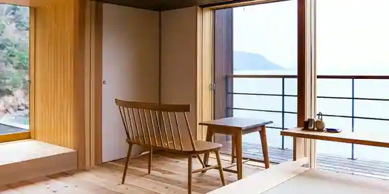
Umi Kaori No Yado Nami Hana Ro
若狭みかた きらら温泉 水月花
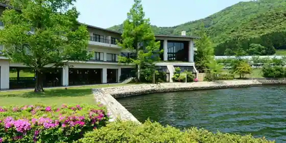
Wakasa Mikata Kirara Onsen Suigetsu Hana
Inn at Kirara Onsen in Umiyama, Wakasacho with lakeside location.
クラフトビールの宿 湖上館パムコ
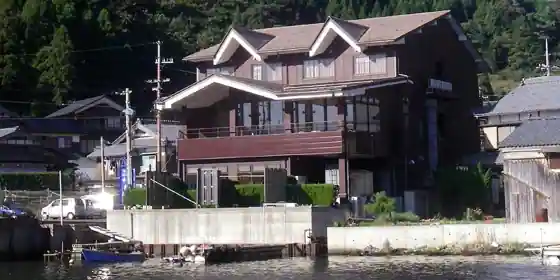
Kurafuto Beer No Yado Kojo Kan Pamuko
Inn in Umiyama, Wakasacho with lakeside location.
三方五湖を一望できる宿 岡三屋 彩かさね
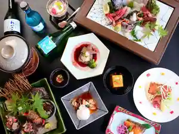
Mikata Go Mizumi Wo Ichibo Dekiru Yado Okasan Ya Sai Kasane
Inn in Namakura, Wakasacho with open-air baths and lakeside location.
ホテル水月花
Hotel Suigetsu Hana
Hotel in Umiyama, Wakasacho with lakeside location.
若狭湾／三方五湖 料理旅館なが田
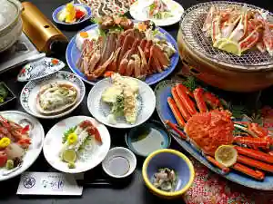
Wakasa Wan / Mikata Go Mizumi Ryori Ryokan Naga Ta
Ryokan inn in Umiyama, Wakasacho with lakeside location.
漁師の宿 勇晴
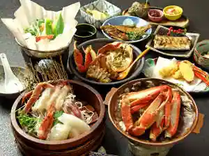
Ryoshi No Yado Isami Sei
若狭の宿 ひさみ
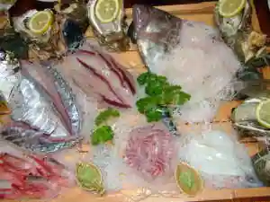
Wakasa No Yado Hisami
Inn in Yokyuken, Wakasacho with local seafood dinners.
素潜り漁師が営む 若狭の食い処 みたにや
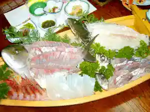
Sumoguri Ryoshi Ga Itonamu Wakasa No Kui Tokoro Mitaniya
Inn in Yokyuken, Wakasacho with local seafood dinners.
民宿はまべや
Minshuku Hamabeya
Family-run minshuku in Yokyuken, Wakasacho with local seafood dinners.
鮮魚自慢の料理宿 まごや
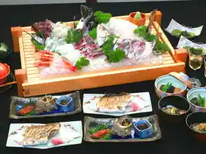
Sengyo Jiman No Ryori Yado Magoya
Inn in Yokyuken, Wakasacho with local seafood dinners.
民宿 浜仁
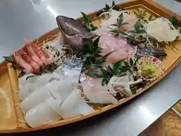
Minshuku Hama Hitoshi
Dining
うなぎ 淡水
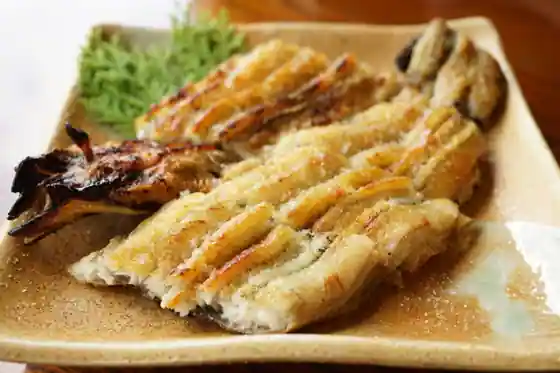
Unagi Tansui
波華楼
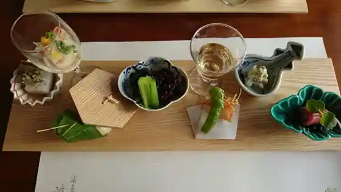
Nami Hana Ro
源与門
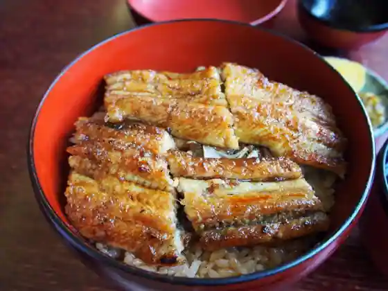
Gen Yo Mon
うなぎや 茂右ェ門
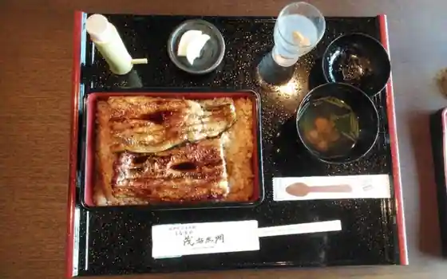
Unagiya Shigeru Migi E Mon
ドライブイン よしだ
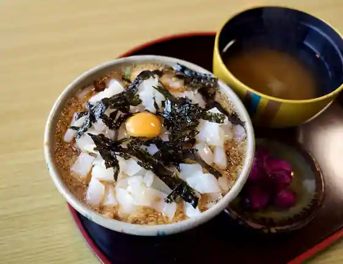
Doraibu Inn Yoshida
cafe なないろ
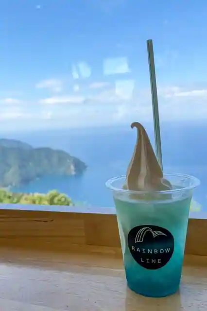
cafe Nanairo
葛と鯖寿しの店 まる志ん
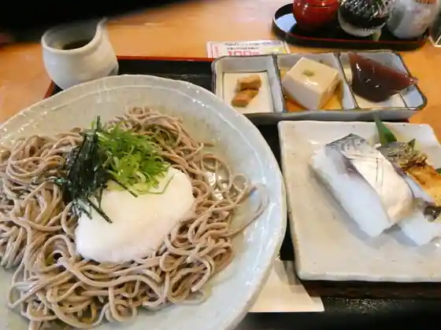
Kuzu To Saba Hisashi Shino Maru Kokorozashi N
ドライブインやまだ
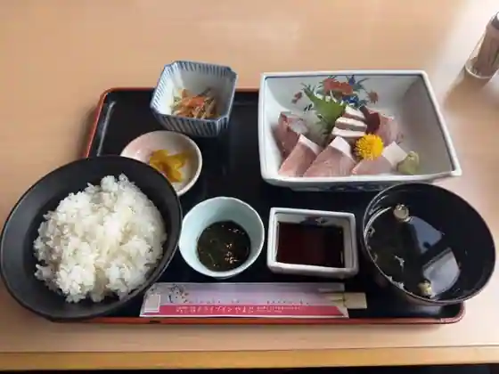
Doraibuin Yamada
道の駅若狭熊川宿 四季彩館
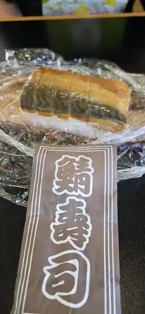
Michi No Eki Wakasa Kumakawa Yado Shiki Sai Kan
サバカフェ
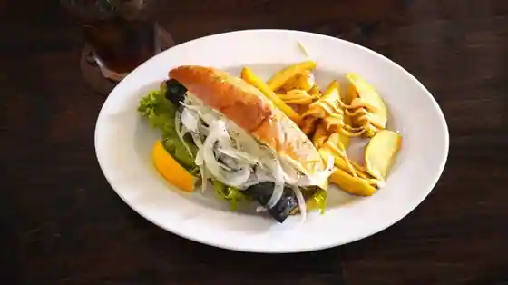
Saba Cafe
和風カフェ 五湖庵
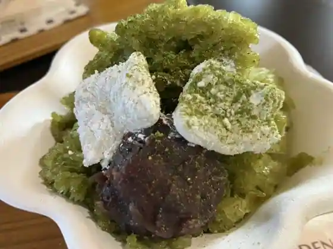
Wafu Cafe Go Mizumi Iori
若狭海鮮・蕎麦 すみよし
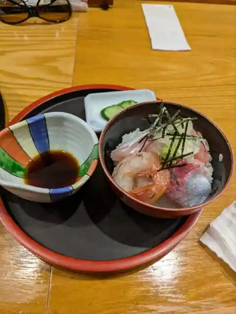
Wakasa Kaisen Soba Sumiyoshi
水月花
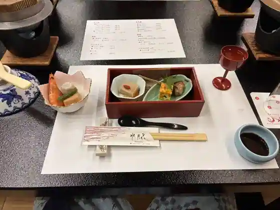
Suigetsu Hana
梅の里会館
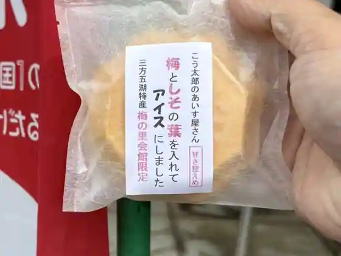
Ume No Sato Kaikan
レストハウス 湖畔
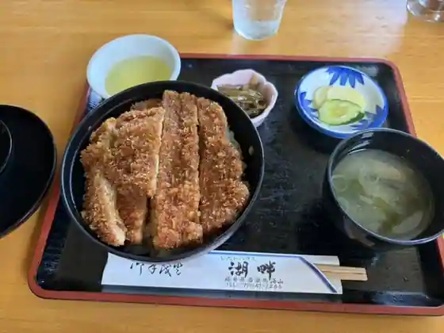
Resuto House Kohan
cafe bamboo
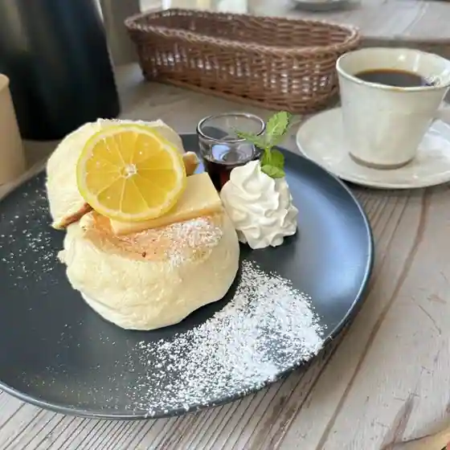
cafe bamboo
魚三
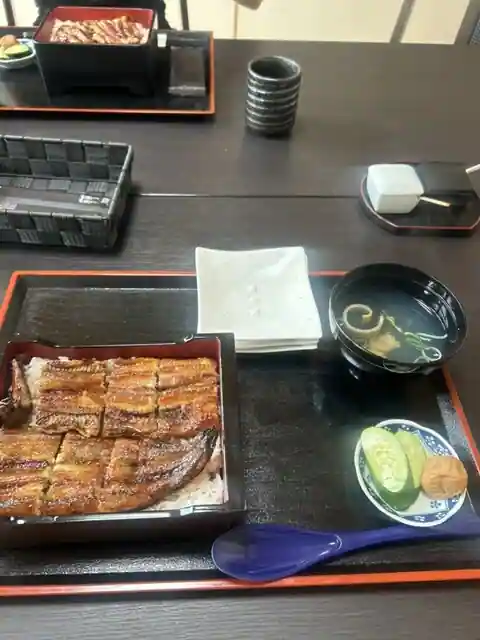
Sakana San
虹岳島荘
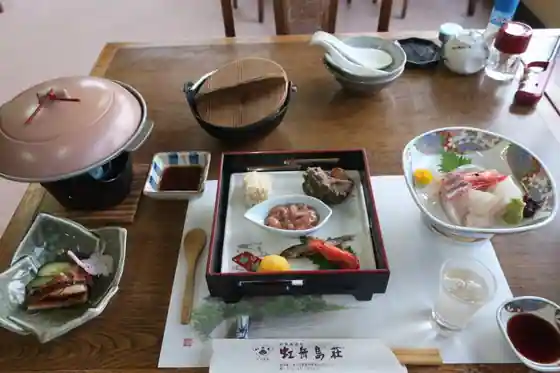
Niji Gaku Shima So
彩かさね
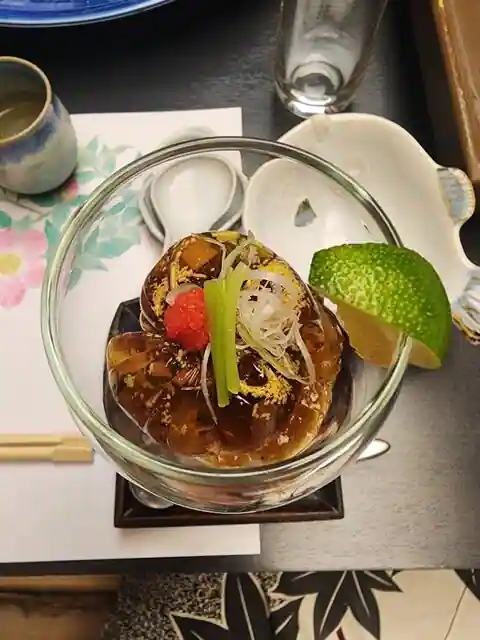
Sai Kasane
ゑびす屋
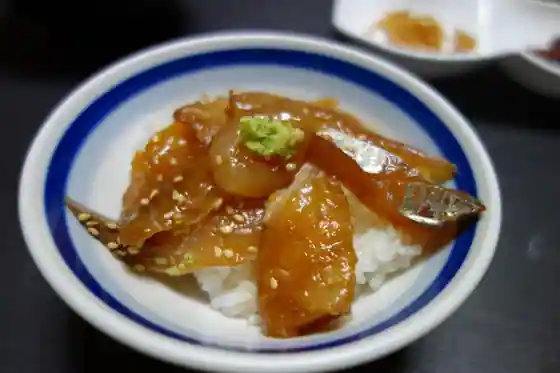
Ebisu Ya
cafe 縞
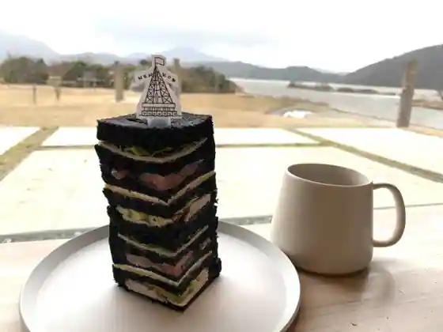
cafe Shima
寺本
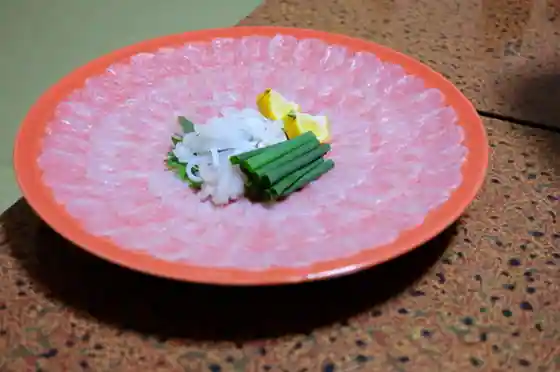
Teramoto
道の駅 三方五湖
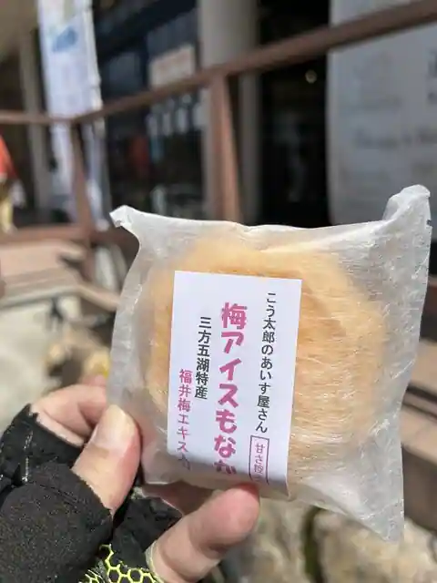
Michi No Eki Mikata Go Mizumi
熊川宿 ひのきや
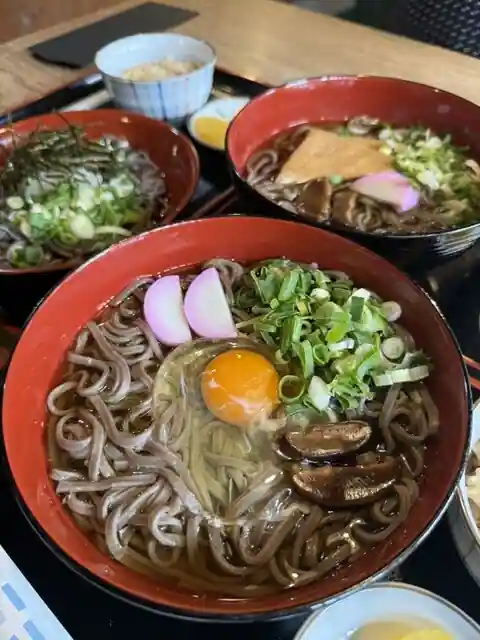
Kumakawa Yado Hinokiya
Sights
Reimbo Line Sancho Park Mikata Go Mizumi Ni Uka Bu Tenku no Terasu

Mikata Go Mizumi

Kumakawa Yado (Saba Kaido)

Wakasacho Uri Wari Meisui Park Uri Wari Falls
Roadside Station Mikata Go Mizumi

Fukuiken Nen Shima Museum
Rentasaikuru - Wakasacho −JR Mikata Eki
Jomon Roman Park
Wakasacho Kankosen Reikukuruzu
Tei O Tera (Tei O Tera) no Icho Kannon
Rentasaikuru - Wakasacho −JR Kaminaka Eki
Wakasacho Mikata Jomon Museum
Ume no Sato Hall
Umi Kaori no Yado Nami Hana Ro
Wakasacho Saba Kaido Kumakawa Yado Museum (Shukuba Kan)
Fukuiken Kaihin Shizen Center
Shoku Ken Beach
Yuko Beach
Roadside Station (Wakasacho Kumakawa Yado)
Mikata Ishi Kanzeon
Tentoku Tera
Showa Kan mukuri
Ryoshi no Yado (Hase)
Kamiko Beach
Yo Kyu Ken Beach
Fukuiken Kaihin Shizen Center
Hamato
Kamiko no Yamazakura
YUMIKATSURA MUSEUM WAKASA
Ogawa Beach
Ebisuya
Shigeta Ie
Reinan Ranch
Wakasacho Rekishi Bunka Kan
Izumi Oka Hitokoto Shrine
Meisui Village
Kumakawa Bansho
Shakushi Beach
Ebisu Shrine (Sube Shrine)
Matsuki Shrine
Sakuma Kinen Koryu Hall
Mikata Ishi Kanzeon no Shidare Sakura
Wakasacho Town Hall Mikata Chosha